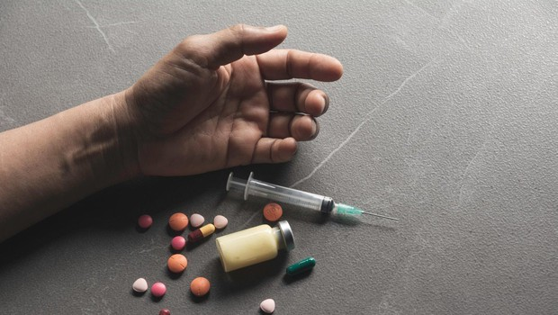
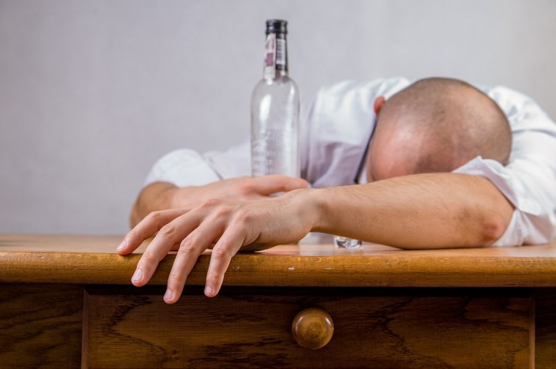
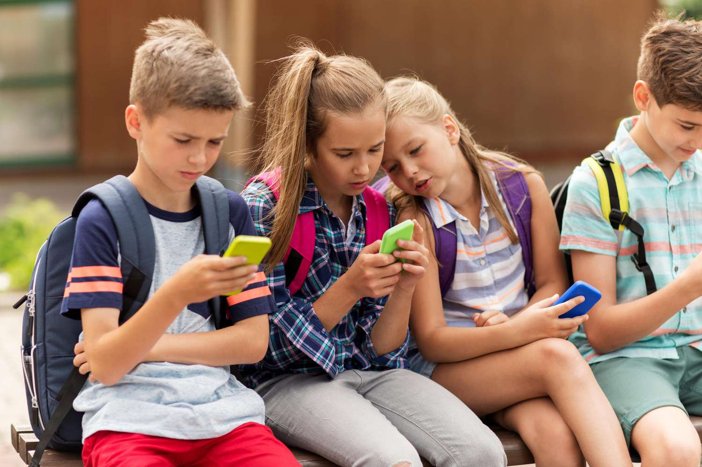
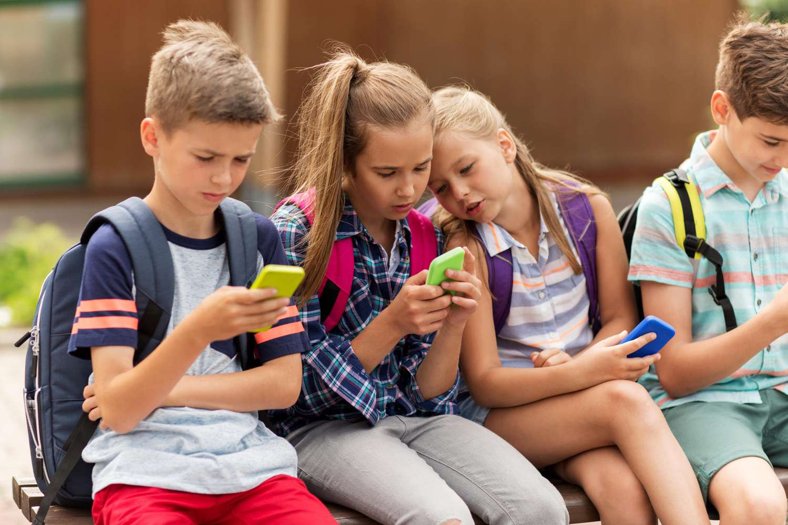

Zasvojenost s telefonom je resna težava, ki prizadene vse več ljudi in na udari so predvsem otroci. Danes si brez pametnega telefona praktično ne znamo predstavljati življenja.
Ravno zaradi vseh dodatnih animacij, kot so brskanje po spletu, uporaba družbenih omrežij,... se vse pogosteje zgodi, da na telefonu dnevno preživimo več ur.
KAJ SPLOH JE ZASVOJENOST?
Zasvojênost po definiciji iz SSKJ je stanje zasvojenega človeka: alkohol, kajenje povzroča zasvojenost; zdraviti se zaradi zasvojenosti; zasvojenost z mamili / psihična zasvojenost pri kateri se zasvojenec vrača k uživanju kake snovi zaradi spomina na njen ugodni učinek; telesna zasvojenost pri kateri se ob prekinitvi pojavijo abstinenčne težave
 KOLIKO ČASA NA DAN JE ŠE PRIMERNA RABA TELEFONA?
- za otroke med 0 - 2 letom naj bi bilo priporočljivo brez uporabe zaslonov
- za otroke med 2 - 5 letom naj bi bilo dovolj že eno uro na dan pod nadzorom staršev
- za otroke med 6 - 9 letom pa največ eno uro na dan
- za najstnike stare med 10 - 12 let je dnevno priporočljiva uporaba elektronskih naprav največ 1,5 ure
- najstniki med 13 - 18 letom pa do 2 uri na dan
Številne izkušnje kažejo, da številni najstniki preživijo bistveno dlje, kot je priporočeno.
 
